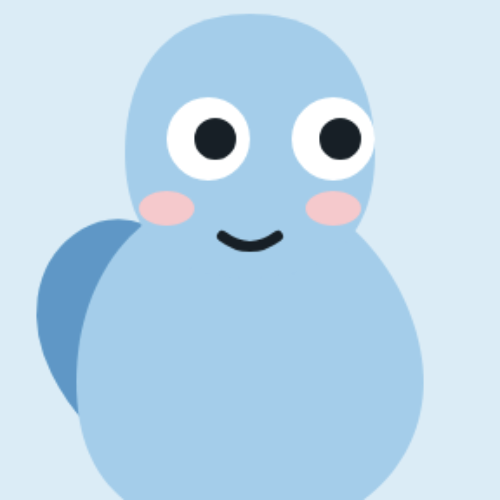
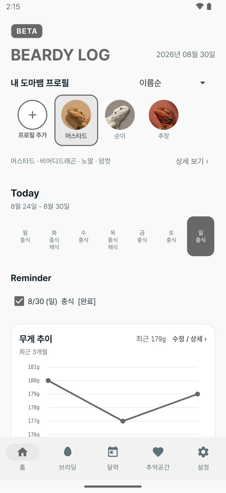
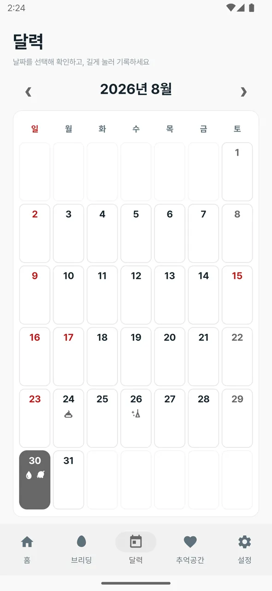
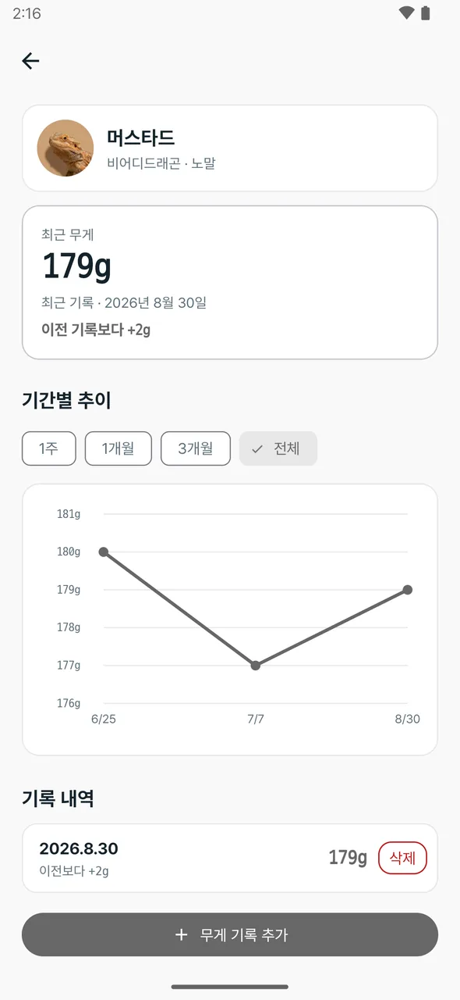
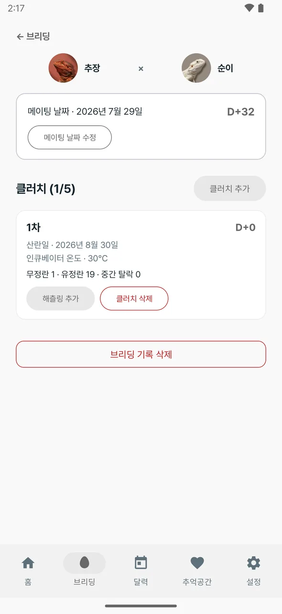

개체 프로필
사진·이름·종·모프·성별·해칭일을 개체마다 따로 관리합니다.

도마뱀의 관리가기록이번식이 편해집니다.
.apk 파일을 열면 Play 스토어를 거치지 않는 앱이라 “알 수 없는 출처” 경고가 뜹니다. 허용을 누르면 설치할 수 있습니다.




사진·이름·종·모프·성별·해칭일을 개체마다 따로 관리합니다.
충식·채식·사료·금식을 요일 반복이나 특정 날짜로 등록하고 달력에서 확인합니다.
기록할 때마다 그래프가 갱신됩니다. 1주·1개월·3개월 구간으로 볼 수 있습니다.
메이팅부터 클러치, 유정란·무정란, 인큐베이터 온도, 해칭까지 남깁니다.
프로필과 사진을 통째로 백업하고, 기기를 바꿔도 그대로 복원합니다.
먼저 떠난 아이는 추억 프로필로 옮겨, 사진과 기록을 그대로 간직합니다.
기기 안에만 저장됩니다. 회원가입이 없고 앱이 데이터를 보내는 서버도 없어서, 인터넷 없이도 기록할 수 있습니다. 자세한 내용은 개인정보처리방침에 있습니다.
설정에서 Google Drive에 백업해 두면 새 기기에서 복원할 수 있습니다. 사진까지 함께 옮겨집니다. 백업하지 않고 앱을 지우면 기록도 같이 사라지니, 기기를 바꾸기 전에 먼저 백업해 주세요.
무료입니다. 광고도 없고 결제도 없습니다.
지금은 안드로이드만 지원합니다. iOS 버전 계획은 아직 없습니다.